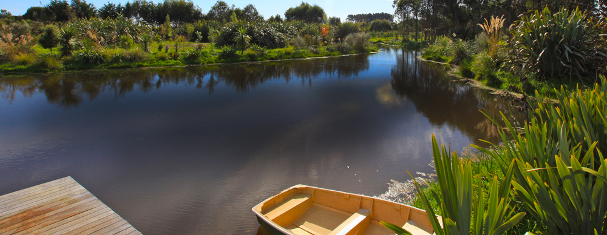
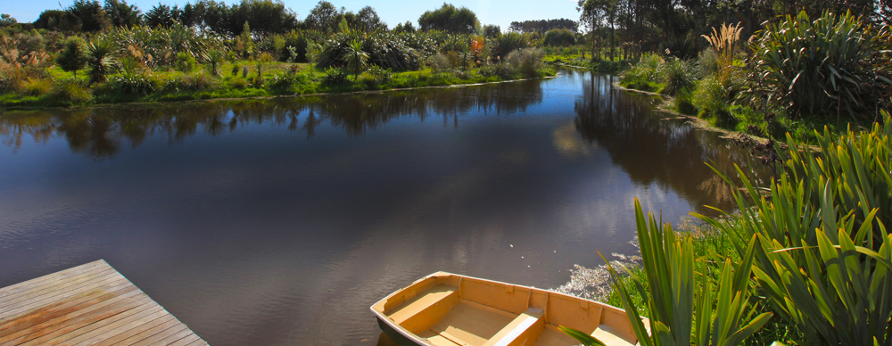

STEP 1: INITIAL CONSULTATION
We begin the process by listening. A member of our team will meet with you to listen to your requirements and answer any questions you might have.
 

We begin the process by listening. A member of our team will meet with you to listen to your requirements and answer any questions you might have.
The brief is a critical part of ensuring we have understood your requirements and can clearly convey these to everyone involved in your project. We will guide you through the briefing process. Some of the things you can expect to discuss are:
"The dialogue between client and architect is about as intimate as any conversation you can have, because when you are talking about building a house, you're talking about dreams" - Robert A.M Stern, 1985.
Once a firm design brief is established, we will prepare a written fee proposal and agreement. This will outline the various stages of work and associated fees. It may also be necessary to consider engaging other consultants at this stage. We will advise if these will be necessary for your project, and assist with briefing them and seeking proposals for you to consider.
We begin each project with a comprehensive site analysis, taking into consideration things such as views, orientation, existing vegetation and structures, town-planning and site constraints and other specific factors that will influence the final result. Obviously these are specific to each project, whether it be a new home or commercial building, an alteration or an interior fit out. Armed with your brief, our site analysis and the skill of our design team we get creative and present to you some sketch ideas of what we think is the best solution for your project. We will often seek advice from a quantity surveyor on an estimated cost of the concept design to confirm that we are on track with your budget.
Once the concept design is agreed, we develop this further with more accuracy and detail. We start to talk about options for heating and ventilating the building, confirm what the exterior and interior finishes will be. As you can imagine there is a lot of design work throughout this phase and it can be quite daunting sometimes contemplating all the decisions that need to be made. You'll be in safe hands – we will advise and make recommendations for you to consider, and you can have as much or as little input as you want. We aim to resolve all design aspects during this phase so that the technical documentation (detailed design) is as fast and efficient as possible. Depending on the size and complexity of the project we may need the input of other consultants during this stage, such as a structural engineer –again we can advise you of this and brief them on your behalf, and we may recommend another cost check to make sure the project remains on track.
If the project exceeds the permitted standards of the District Plan a Resource Consent will be required. Should one be needed we will liaise with local authorities on your behalf and prepare the necessary documentation. In some complex cases we recommend bringing on board an independent planning consultant. This part of the process can be rather dull. We recommend you move onto the next step, just rest assured you'll be fully informed and all the i's will be dotted and the t's crossed.
Depending on the scope of the services commissioned we often provide additional documentation to resolve the interior design and detail. By now we have listened to, understood, developed and executed your dream design, carrying this passion through to interior detailing, fitting and fixture selections, material finishes and colours, soft furnishings, textiles and the like are essential for us to ensure the design continuity of the project and produce an overall synergistic result. These documents typically detail items such as built in furniture, fireplaces, storage solutions, kitchens, bathrooms, door furniture, bathroom fittings and fixtures, lighting design and selection etc. We provide full schedules for all of these items and can also assist with purchasing via our contacts if required.
We recommend landscape design begins as early as possible. Analysis of the site and it's surroundings are an integral part of the design process and have a strong influence on the resulting design. We believe that all buildings should respond to their context and the environment in order to contribute in a positive way. Landscaping is a crucial aspect to ensure a cohesive outcome. We collaborate with several landscape architects and designers and can suggest one that would be a good fit for your project, or we can work with someone you may like to engage yourself.
With the creative scope completed planning permission sorted, we now develop the technical documentation including full working drawings and specifications so that building consent and the tendering process can begin. As you can imagine there is a lot of detail and time involved in this section of work, hence the importance of getting things right in the previous steps to clarify the design and minimise changes.
Now we do everything possible to ensure the smooth running of the construction program. This involves producing a document to include particular items such as; conditions for pricing, insurances, handling of variations to the design, programming, information on how the project is to be managed, and explicit responsibilities of both yourself and the main contractor. That's a lot of detail but it's the best way to achieve the very best possible result - which we will be moving heaven and earth to achieve for you.
We can make recommendations on suitable contractors for your project and send the documentation to them for pricing. We answer any questions they may have and review their tender submissions. We'll make recommendations to you on the most suitable choice and coordinate the signing of contractual documents between yourself and the successful contractor.
For the duration of construction we will ensure the terms of the building contract and standard of workmanship meet our exacting standards and our expectations of quality, and that absolute attention has been paid to the detail. We resolve any issues that arise during construction and ensure the design intent is carried through to every aspect of the build. Regular site meetings, progress updates and meeting minutes, ensure you are kept fully informed and involved throughout this busy and sometimes anxious time. You will be made aware of any house-keeping matters requiring attention, and of course we are available 24/7 (well –maybe 8 till 5:30). Most importantly you'll be fully involved in what is a very exciting part of the journey and see all the ink, sweat and tears realised on site.